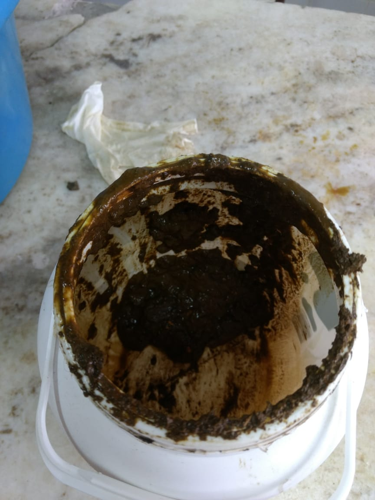

  <div class="row">

    <div class = "col s12">
        
        <h1 class ="center-align titulo">Nuestra historia</h1>

        <div class="carousel center-align">

            <div class="carrousel-item">

                <h2 class= "subtitulo" > Primer produccion </h2>
                <div class= "linea-division"></div>
                <p class="sabor">Llenando fermentador</p>
                
                
            </div>
            
            <div class="carrousel-item">

                <h2 class= "subtitulo" > Segunda produccion </h2>
                <div class= "linea-division"></div>
                <p class="sabor">Llenando fermentador</p>
                
                
            </div>

            
        </div>

    </div>

</div>


//!!<"use strict "

document.addEventListener('DOMContentLoaded', () => {

    const elementosCarousel = document.querySelectorAll('.carousel');
    M.Carousel.init(elementosCarousel, {
<!--         duration: 150
    });

}); -->-->

<div class="slider-imgs">

     

   </div>

<!-- "use strict"

window.addEventListener('DOMContentLoaded', () => {
    console.log("Hello world")

    const imagenes = [
    imagen1, imagen2]

    imagenes[0] = './styles/images/primer-produ1.jpeg'
    imagenes[1] = './styles/images/primer-produ2.jpeg'
    imagenes[2] = './styles/images/primer-produ3.jpeg'
    imagenes[3] = './styles/images/segunda-produ1.jpg'
    imagenes[4] = './styles/images/segunda-produ2.jpg'
    imagenes[5] = './styles/images/segunda-produ3.jpg'
    imagenes[6] = './styles/images/segunda-produ4.jpg'
    
   let indicedeImagenes = 0;
   let tiempo = 5000;

   
    function cambiarImagenes(){
        
        document.slider.src = imagenes[indicedeImagenes]
        
        
        if (indicedeImagenes <= 6) {
            indicedeImagenes++;
        } else {
            indicedeImagenes = 0;
        }
    }
    
    setInterval(cambiarImagenes, tiempo)
})
-->


<!--   <section class="buttons"> ICONOS PARA LAS REDES 
        <ul class="lista">

            <li class="f"> <a href=""  class="fa fa-facebook"></a></li>
            <li class="t"> <a href=""  class="fa fa-twitter"></a></li>
            <li class="i"> <a href="""  class="fa fa-instagram"></a></li>
            <li class="l"> <a href=""  class="fa fa-linkedin"></a></li>
        </ul>
    </section> 